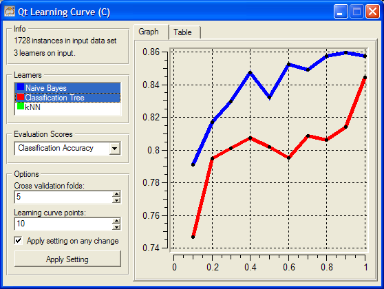

This is documentation for Orange 2.7. For the latest documentation, see Orange 3.
Graphing and Orange Widgets¶
The most fun widgets are of course those that include graphics. For this we either use Qt’s QGraphicsScene (widgets for tree and heat map visualizations, for instance, use this), or use a special control for drawing data plots as provided in Qwt library and PyQwt interface. Here we look at the latter, and extend our learning curve widget with a control that plots the curve.
Plots¶
Let us construct a widget with a following appearance:
There are two new elements from our previous incarnation of a learning curve widget: a control with a list of classifiers, and a graph with a plot of learning curves. From a list of classifiers we can select those to be displayed in the plot.
The widget still provides learning curve table, but this is now offered in a tabbed pane together with a graph. The code for definition of the tabbed pane, and initialization of the graph is
# start of content (right) area
tabs = OWGUI.tabWidget(self.mainArea)
# graph tab
tab = OWGUI.createTabPage(tabs, "Graph")
self.graph = OWGraph(tab)
self.graph.setAxisAutoScale(QwtPlot.xBottom)
self.graph.setAxisAutoScale(QwtPlot.yLeft)
tab.layout().addWidget(self.graph)
self.setGraphGrid()
# table tab
tab = OWGUI.createTabPage(tabs, "Table")
self.table = OWGUI.table(tab, selectionMode=QTableWidget.NoSelection)
OWGrap is a convenience subclass of QwtPlot and is imported from OWGraph module. For the graph, we use setAxisAutoScale() to request that the axis are automatically set in regard to the data that is plotted in the graph. We plot the graph in using the following code
def drawLearningCurve(self, learner):
if not self.data:
return
curve = self.graph.addCurve(
learner.name,
xData=self.curvePoints,
yData=learner.score,
autoScale=True)
learner.curve = curve
self.setGraphStyle(learner)
self.graph.replot()
This is simple. We store the curve returned from addCurve with a learner.
Warning
This is a very bad design. Please do not store widget specific data in the input objects.
In this way, each learner also stores the current scores, which is a list of numbers to be plotted in Qwt graph. The details on how the plot is set are dealt with in setGraphStyle function:
def setGraphStyle(self, learner):
curve = learner.curve
if self.graphDrawLines:
curve.setStyle(QwtPlotCurve.Lines)
else:
curve.setStyle(QwtPlotCurve.NoCurve)
curve.setSymbol(
QwtSymbol(QwtSymbol.Ellipse,
QBrush(QColor(0,0,0)), QPen(QColor(0,0,0)),
QSize(self.graphPointSize, self.graphPointSize)))
curve.setPen(QPen(learner.color, 5))
Notice that the color of the plot line that is specific to the learner is stored in its attribute color (learner.color). Who sets it and how? This we discuss in the following subsection.
Colors in Orange Widgets¶
Uniform assignment of colors across different widget is an important issue. When we plot the same data in different widgets, we expect that the color we used in a consistent way; for instance data instances of one class should be plotted in scatter plot and parallel axis plot using the same color. Developers are thus advised to use ColorPaletteHSV, which can be imported from OWWidget module. ColorPaletteHSV takes an integer as an parameter, and returns a list of corresponding number of colors. In our learning curve widget, we use it within a function that sets the list box with learners
def updatellb(self):
self.blockSelectionChanges = 1
self.llb.clear()
colors = ColorPaletteHSV(len(self.learners))
for (i,lt) in enumerate(self.learners):
l = lt[1]
item = QListWidgetItem(ColorPixmap(colors[i]), l.name)
self.llb.addItem(item)
item.setSelected(l.isSelected)
l.color = colors[i]
self.blockSelectionChanges = 0
The code above sets the items of the list box, where each item includes a learner and a small box in learner’s color, which is in this widget also used as a sort of a legend for the graph. This box is returned by ColorPixmap function defined in OWColorPalette.py. Else, the classifier’s list box control is defined in the initialization of the widget using
self.cbox = OWGUI.widgetBox(self.controlArea, "Learners")
self.llb = OWGUI.listBox(self.cbox, self, "selectedLearners",
selectionMode=QListWidget.MultiSelection,
callback=self.learnerSelectionChanged)
self.llb.setMinimumHeight(50)
self.blockSelectionChanges = 0
Now, what is this blockSelectionChanges? Any time user makes a selection change in list box of classifiers, we want to invoke the procedure called learnerSelectionChanged(). But we want to perform actions there when changes in the list box are invoked from clicking by a user, and not by changing list box items from a program. This is why, every time we want learnerSelectionChanged() not to perform its function, we set self.blockSelectionChanges to 1.
In our widget, learnerSelectionChanged() figures out if any curve should be removed from the graph (the user has just deselected the corresponding item in the list box) or added to the graph (the user just selected a learner)
def learnerSelectionChanged(self):
if self.blockSelectionChanges: return
for (i,lt) in enumerate(self.learners):
l = lt[1]
if l.isSelected != (i in self.selectedLearners):
if l.isSelected: # learner was deselected
l.curve.detach()
else: # learner was selected
self.drawLearningCurve(l)
self.graph.replot()
l.isSelected = i in self.selectedLearners
# Graph specific methods
The complete code of this widget is available here. This is almost like a typical widget that is include in a standard Orange distribution, with a typical size just under 300 lines. Just some final cosmetics is needed to make this widget a standard one, including setting some graph properties (like line and point sizes, grid line control, etc.) and saving the graph to an output file.